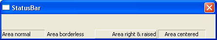

CreateStatusBar()
Syntax
Result = CreateStatusBar(#StatusBar, WindowID)Description
Create and add an empty #StatusBar to the specified WindowID. Once the bar is created, AddStatusBarField() can be used to setup the different parts of the bar.
Parameters
#StatusBar A number to identify the new status bar. #PB_Any can be used to auto-generate this number. WindowID The window on which the status bar needs to be created. WindowID() can be used to get this value.
Return value
Nonzero if the status bar has been successfully created, zero otherwise.
Example
If OpenWindow(0, 0, 0, 440, 50, "StatusBar", #PB_Window_SystemMenu | #PB_Window_ScreenCentered | #PB_Window_SizeGadget) If CreateStatusBar(0, WindowID(0)) AddStatusBarField(90) AddStatusBarField(100) AddStatusBarField(#PB_Ignore) ; automatically resize this field AddStatusBarField(100) EndIf StatusBarText(0, 0, "Area normal") StatusBarText(0, 1, "Area borderless", #PB_StatusBar_BorderLess) StatusBarText(0, 2, "Area right & raised", #PB_StatusBar_Right | #PB_StatusBar_Raised) StatusBarText(0, 3, "Area centered", #PB_StatusBar_Center) Repeat Until WaitWindowEvent() = #PB_Event_CloseWindow EndIf
See Also
FreeStatusBar()
Supported OS
All